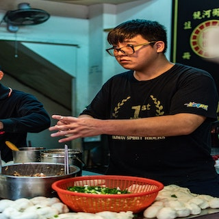
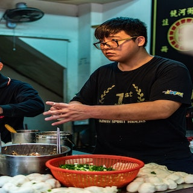

There are more than one hundred thousand restaurants in Shanghai. A Moveable Feast sets out to try as many as possible. Every week a restaurant is chosen. One week can you could be nursing meat filled steamed buns, another tucking into spicy rabbit brain or the next eating in one of the many Michellin restaurants in the city. Shanghai has a lot to offer and we hope to introduce you to it all.
 

I have in Shanghai my whole life but I hope to one day to have eaten in all the best restaurants. I also enjoy the idea of experiencing every possible noodle deviation from Sichuan to Dongbei to Hong kong.
I have my whole life but I hope to one day to have eaten in all the best restaurants.oooooppppppps